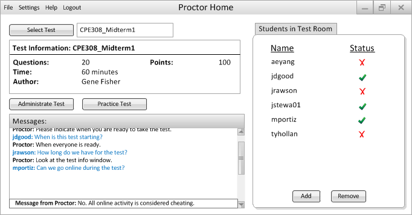
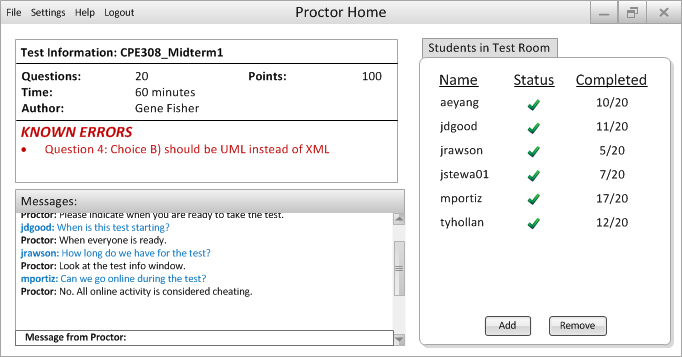

Figure 2.4.1.1: Proctor Home Screen
Test administration is done in the top left of the screen. Select Test allows for a proctor to choose the test (with the name displayed to the right). When a new test is chosen, the information for that test is displayed in the Test Information box.
The student list shows the current list of students that are eligible to take the test. The add and remove buttons allow a proctor to add or remove students from the list if need be. Status indicates if the student has said they are ready to take a test.
Administrate Test takes control of student computers and forces them to the student authentication screen. Practice test does the same, but indicates that the test is for practice only and will not be graded.
Messages window displays a history of all messages posted by students and the proctor. This can be used to tell students that the test will begin shortly and answer any last minute questions.
Figure 2.4.1.2: Proctor Admin Test
After a Proctor clicks "Administrate test" this screen is displayed. Test selection is no longer allowed, and a new section for Known Errors appears.
Students in Test Room now displays the number of questions completed by each student.